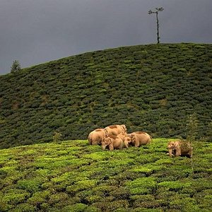
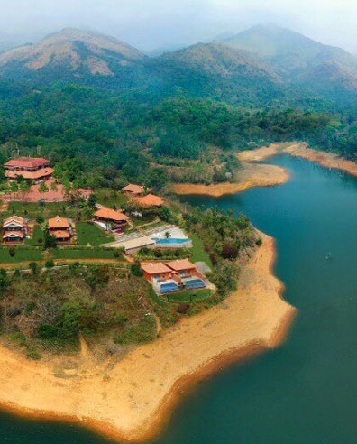

Ooty, officially known as Udhagamandalam, is a charming hill station nestled in the Nilgiri Hills of the Western Ghats in Tamil Nadu, India. Renowned for its breathtaking landscapes and salubrious climate, Ooty attracts visitors with its lush green hills, dense forests, and picturesque tea plantations. The town offers a delightful escape from the heat, characterized by a cool and temperate climate throughout the year. Ooty is home to attractions such as the Government Botanical Gardens, featuring diverse plant species, the serene Ooty Lake offering boat rides, and the historic Nilgiri Mountain Railway, providing a scenic train journey. With its tea estates, rose gardens, and the majestic Doddabetta Peak, Ooty captivates tourists seeking both natural beauty and tranquility, making it a popular destination for nature enthusiasts and those in search of a peaceful retreat.
Valparai

Valparai is a serene hill station located in the Western Ghats of Tamil Nadu, India. Nestled amidst lush green tea estates, dense forests, and rolling hills, Valparai offers a tranquil escape for nature lovers. The region is known for its picturesque landscapes, abundant wildlife, and a pleasant climate. Tourists visiting Valparai can explore the sprawling tea plantations, take in the panoramic views from various vantage points, and enjoy the calm ambiance. The town is also a gateway to the Anamalai Tiger Reserve, where wildlife enthusiasts can spot diverse flora and fauna. Valparai is a hidden gem that appeals to those seeking a peaceful retreat away from the hustle and bustle of urban life.
Wayanad

Wayanadu is a district in the Indian state of Kerala, and Valpara does not appear to be a specific location within Wayanadu that I'm aware of. If you're referring to a particular place or have additional details about Valpara in Wayanadu, please provide more context, and I'll do my best to assist you. Otherwise, if you have another inquiry or if there's a correction needed, feel free to provide more information.